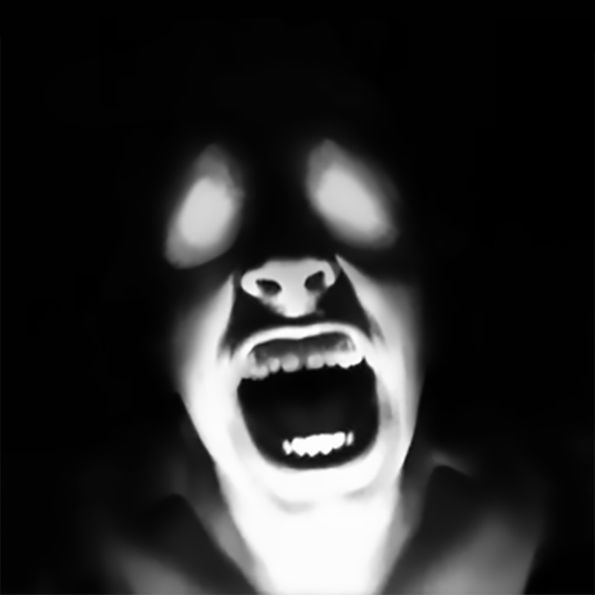
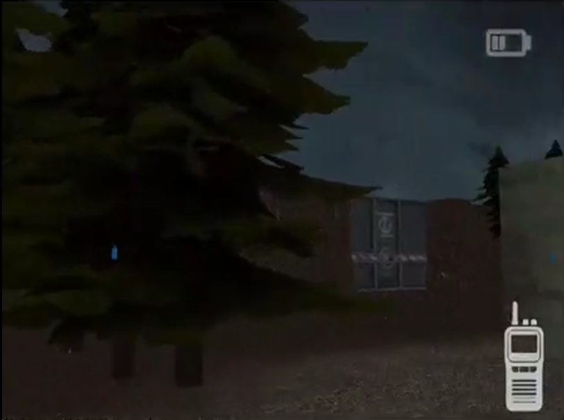
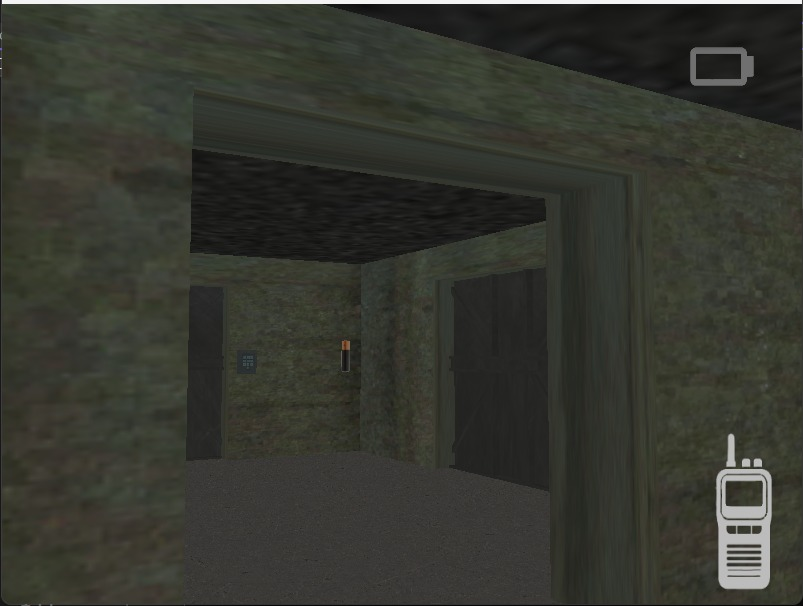
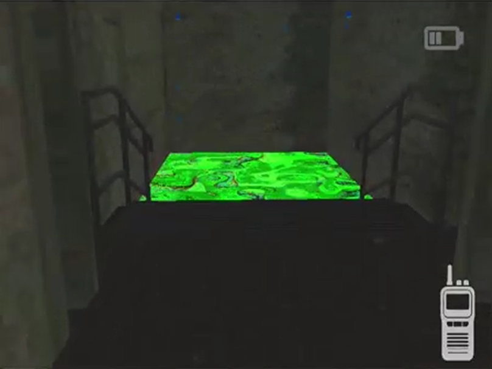
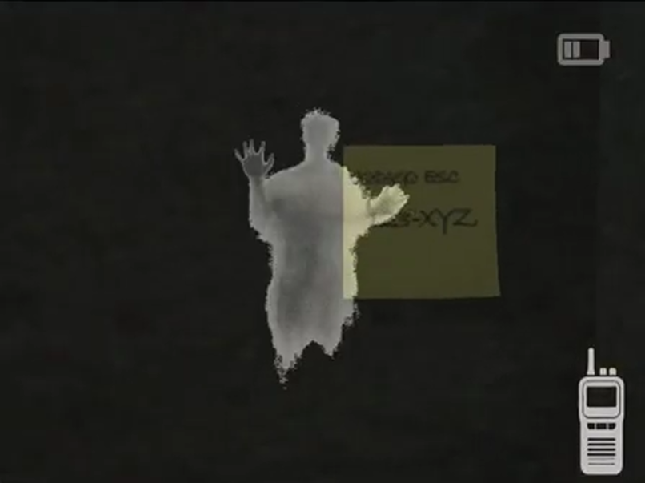
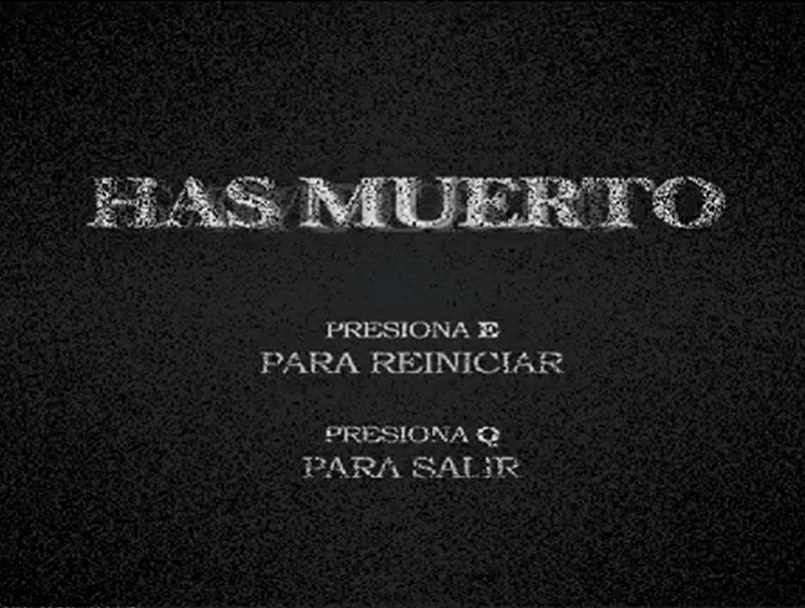

gcanopaulina@gmail.com

Proyecto individual desarrollado en C++ utilizando OpenGL para gráficos. Es un videojuego Survival Horror semi Rouge-Like desarrollado en C++ utilizando OpenGL para gráficos El juego presenta un sistema de llaves y baterias aleatorias, donde necesitas mantener alejado a un espectro para tener oportunidad de escapar. Inspirado en los juegos de horror de los 2000s.




